Short-landscape keyboard fitting
The original attempt fixes the horizontal Account Centre navigation and session/back row above the page. At 792 × 354, with 24 px top/bottom insets, 1.3× text and a 152 px keyboard reserve, only 26 px remains for the page scroller. A 46 px account field cannot fit.
The finished default keeps the original arrangement and explicitly bounds this geometric preview to an 82 px reserve, leaving a 96 px form viewport. This is a review convenience, not a solution for an actual 152 px native keyboard. The proposed alternative keeps the original navigation, labels, controls and styling, and places them in the vertical scroller only while the keyboard is visible. It retains the full 152 px reserve and provides 154 px of scrollable height.
Decision requested: May the original account navigation and back/session row join the vertical scroll while the native IME is visible on a short phone window? If approved, port the conditional scrolling behavior and restore the existing fixed layout after IME dismissal. Native Qt focus, insets, keyboard geometry and scroll restoration remain to be verified in the app.
| Variant | Reserved keyboard | Scrollable height | 46 px input |
|---|---|---|---|
| Original attempt | 152 px | 26 px | Clipped in all four forms |
| Finished default, bounded preview | 82 px | 96 px | Reachable; smaller preview reserve disclosed |
| Proposed original sections in scroll | 152 px | 154 px | Reachable in all four forms |
Username

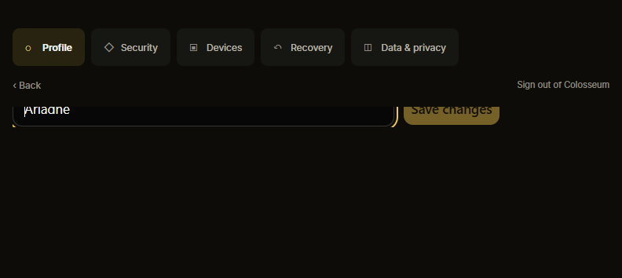
Open runnable view

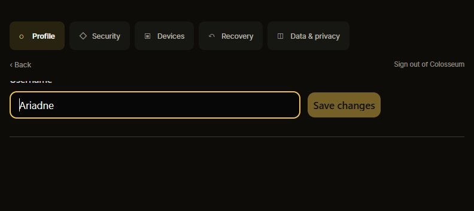
Open runnable view

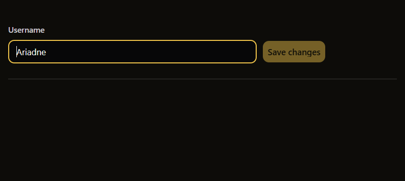
Open runnable view
Current password

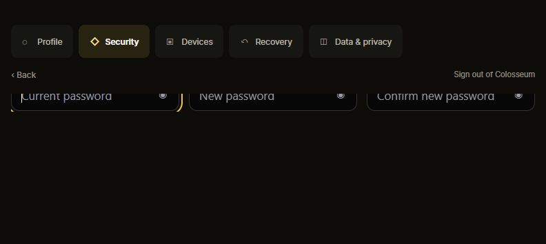
Open runnable view

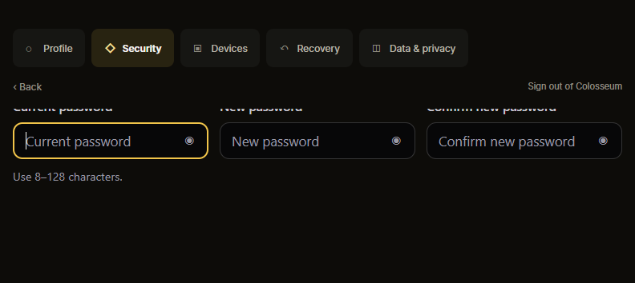
Open runnable view

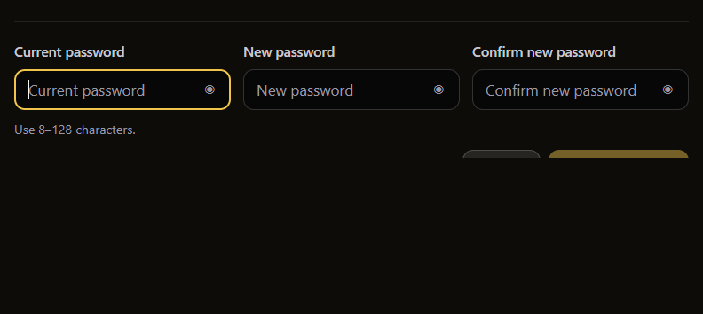
Open runnable view
Recovery replacement

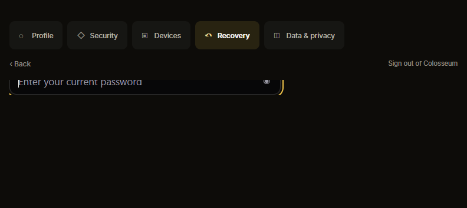
Open runnable view

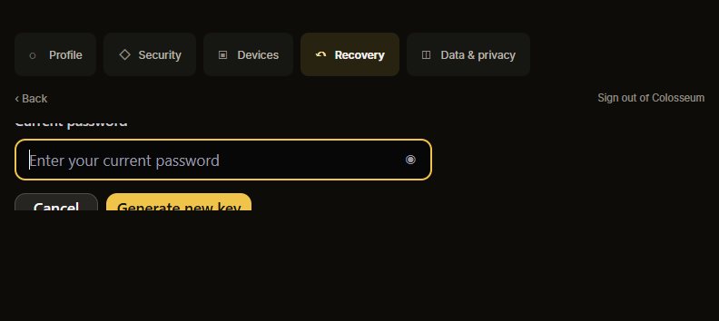
Open runnable view

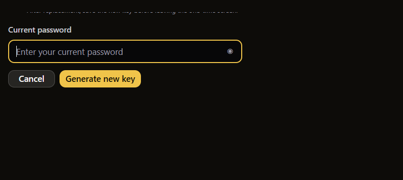
Open runnable view
Deletion confirmation

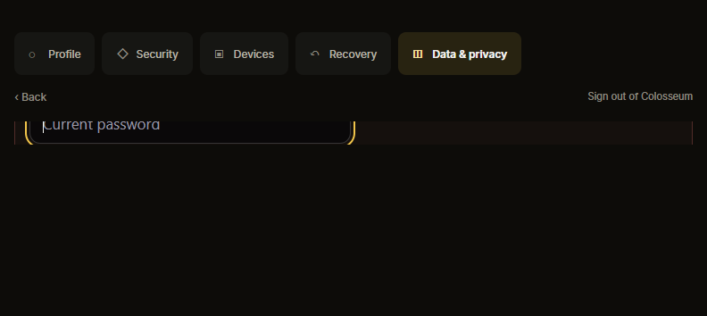
Open runnable view

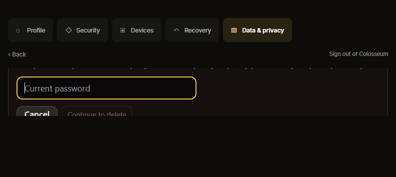
Open runnable view

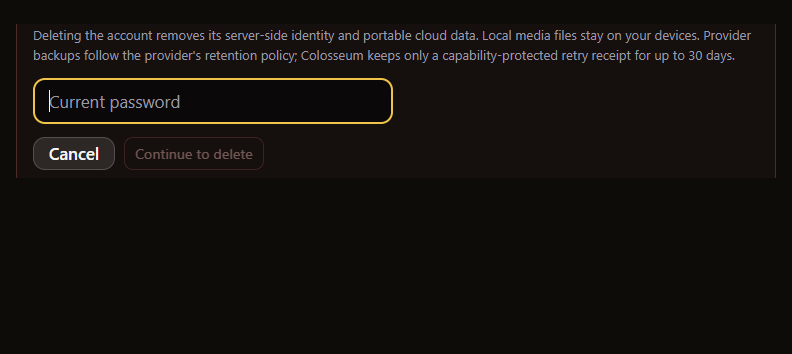
Open runnable view
Evidence limits
These are isolated Chromium HTML captures with all network requests blocked, using the project’s supplied fonts and controls. Inputs contain no real credentials. Measurements establish HTML reachability only. The default preview never claims native keyboard correctness. The opt-in proposal uses imeLayout=scroll; no app or frozen QML was modified.